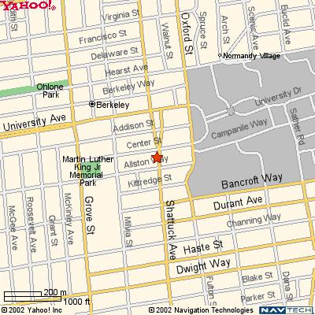

Directions to the Molecular Sciences Institute
2168 Shattuck Avenue, Floor 2
(In Downtown Berkeley, CA)
Main Phone: 1-510-647-0690
PUBLIC TRANSPORTATION:
Bay Area Rapid Transit (BART) trains operate from Fremont, Richmond, Bay Point/Concord and San Francisco/Daly City. A map indicating the route and stops of each train is located at each station. The Berkeley (Downtown Berkeley) BART station is just steps from the front door of the Molecular Sciences Institute.
DRIVING DIRECTIONS:
From Northbound Highway 101 (Daly City, San Francisco Airport)
- Exit to San Francisco / Oakland Bay Bridge
- Exit to I-80 East (Berkeley/Sacramento)
- Exit University Avenue. Veer to your right, heading East, towards the Berkeley Hills
- Continue East on University Avenue for approximately 1.3 miles to Shattuck Avenue
- Turn right onto Shattuck Avenue
- Continue on Shattuck Avenue for 3 blocks
- The 2168 block of Shattuck Avenueis between Center Street and Allston Way
From Westbound 24 (Contra Costa County)
- Take 24 through the Caldecott Tunnel to Highway 13 Berkeley exit
- Continue on 13, Hwy 13 becomes Ashby Avenue near the Clarmont Hotel
- Turn right at Shattuck Avenue
- The 2168 block of Shattuck Avenue is between Allston Way and Center Street
From Westbound Highway 13
- Highway 13 becomes Tunnel Road
- Continue on Tunnel Road. Tunnel Road becomes Ashby Avenue near the Clarmont Hotel
- Turn right at Shattuck Avenue
- The 2168 block of Shattuck Avenue is between Allston Way and Center Street
From I-80 East or West (San Francisco, Sacramento, Richmond, Vallejo)
- Exit University Avenue. Veer to your right, heading East, towards the Berkeley Hills
- Continue East on University Avenue for approximately 1.3 miles to Shattuck Avenue
- Turn right onto Shattuck Avenue
- Continue on Shattuck Avenue for 3 blocks
- The 2168 block of Shattuck Avenueis between Center Street and Allston Way
From Westbound I-580
- Exit I-80 East (Berkeley/Sacramento)
- Exit at University Avenue
- Turn right onto Shattuck Avenue
- Continue east on University Avenue for approximately 1.3 miles to Shattuck Avenue
- Turn right onto Shattuck Avenue
- Continue on Shattuck Avenue for 3 blocks
- The 2168 block of Shattuck Avenueis between Center Street and Allston Way
From North I-880 (San Jose, Hayward, Oakland Airport)
- Stay in left center lanes
- Exit 80 East (Berkeley)
- Exit University Avenue. Veer to your right, heading East, towards the Berkeley Hills
- Continue East on University Avenue for approximately 1.3 miles to Shattuck Avenue
- Turn right onto Shattuck Avenue
- Continue on Shattuck Avenue for 3 blocks
- The 2168 block of Shattuck Avenueis between Center Street and Allston Way
